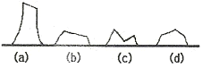
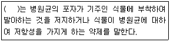
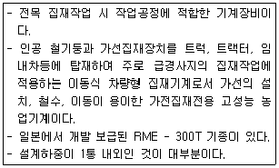
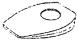
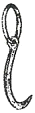
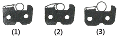

산림기능사 (2011-07-31 기출문제)
1과목: 조림 및 육림기술
1. 택벌작업에 대한 특성을 올바르게 설명하고 있는 것은?
- 택벌이 실시된 임분은 크고 작은 나무들이 뒤섞여 함께 자라므로 다층을 이룬 숲의 구조가 되도록 하는 작업
- 인공조림으로 이루어진 일제 동령 임분에 행하는 작업
- 혼효림으로 저림, 교림을 동일 임지위에 성립시키는 작업
- 벌채 적지에 모수를 남겨 치수 보호 잔존 모수의 생장 촉진을 위한 작업
(정답률: 66%)

2. 용재와 신탄재를 동시에 생산할 수 있는 작업종은?
- 교림작업
- 저림작업
- 중림작업
- 왜림작업
(정답률: 74%)
3. 임지의 생산력을 유지하고 또 증진시키기 위한 임지의 보육방법이 아닌 것은?
- 건조한 남향임지에 수평구를 설치한다.
- 비료목을 심는다.
- 개벌작업을 자주 실시한다.
- 나뭇가지나 관목 등으로 임지를 피복한다.
(정답률: 83%)
4. 종자 저장 시 정선 후 곧바로 노천매장을 해야 하는 수종으로만 짝지어진 것은?
- 층층나무, 전나무
- 삼나무, 편백
- 소나무, 해송
- 느티나무, 잣나무
(정답률: 61%)
5. 산벌작업에서의 작업단계가 올바르게 된 것은?
- 예비벌 → 후벌 → 하종벌
- 예비벌 → 종벌 → 수광벌
- 예비벌 → 하종벌 → 후벌
- 수광벌 → 종벌 → 하종벌
(정답률: 90%)
6. 다음 중 개량종자를 공급할 목적으로 인위적으로 조성된 것은?
- 채종림
- 잠정 채종림
- 채종원
- 채수원
(정답률: 60%)
7. 경제림 조성을 위한 작업종에서 임목들을 소군상, 군상, 단상형태로 불규칙적으로 벌채하는 갱신법은?
- 대상벌
- 군상벌
- 택벌
- 대벌
(정답률: 76%)
8. 다음 중 하예작업 시 적용이 용이한 작업 장비는?
- 기계톱
- 예불기
- 트랙터
- 견인용 집재기
(정답률: 78%)
9. 어릴 때 많은 광선을 요구하지 않는 잣나무, 전나무 등에 적합한 밑깎기 작업 방법은?
- 전면 깎기
- 줄 깎기
- 둘레 깎기
- 무더기 깎기
(정답률: 44%)
10. 소나무 종자의 1m2당 파종량(부피)으로 가장 적당한 것은?
- 0.01 L
- 0.⑤ L
- 0.09 L
- 1.29 L
(정답률: 70%)
11. 다음 가지치기의 목적에 대한 설명으로 틀린 것은?
- 옹이가 없는 경제성 높은 목재를 생산한다.
- 하목을 보호하고 생장을 촉진시킨다.
- 나무끼리의 생존경쟁을 완화시킨다.
- 산림의 위해를 증가시킨다.
(정답률: 83%)
12. 덩굴치기의 최적기는 언제인가?(오류 신고가 접수된 문제입니다. 반드시 정답과 해설을 확인하시기 바랍니다.)
- 3~4월
- 5~6월
- 7~8월
- 9~10월
(정답률: 42%)
13. 냉한대 침엽수림을 구성하는 대표적인 우점 수종에 속하지 않는 것은?
- 오리나무류
- 소나무류
- 가문비나무류
- 전나무류
(정답률: 65%)
14. 굵은 생가지 치기 시 위험성이 적은 수종 은?
- 단풍나무
- 물푸레나무
- 벚나무
- 포플러류
(정답률: 62%)
15. 득묘율 70%, 순량율 80%, 고사율 50%, 발아율 90%일 때 그 종자의 효율은?
- 40%
- 56%
- 63%
- 72%
(정답률: 78%)
16. 종자의 숙기가 7월경인 수종은?
- 황철나무
- 회양목
- 잣나무
- 은행나무
(정답률: 88%)
17. 어린나무 가꾸기 작업 시 맹아력이 왕성한 활엽수종의 맹아 발생 및 성장을 약화시키고자할 때 어떻게 하는 것이 가장 좋은가?
- 겨울에서 초봄사이에 수간 높이를 낮게 자른다.
- 겨울에서 초봄사이에 수간 높이를 높게 자른다.
- 여름에서 초가을 사이에 수간 높이를 낮게 자른다.
- 여름에서 초가을 사이에 수간 높이를 높게 자른다.
(정답률: 46%)
18. 질소고정균인 근류군과 공생하는 수종으로만 짝지어진 것은?
- 아까시나무, 싸리나무
- 오리나무, 신갈나무
- 리기테다소나무, 은행나무
- 단풍나무, 낙엽송
(정답률: 58%)
19. 산림토양에서만 볼 수 있는 토양층으로 가장 위층을 이루는 것은?
- 유기물층(O층)
- 표토층(A)
- 심토층(B)
- 모재층(C)
(정답률: 90%)
20. 묘포의 입지조건으로 틀린 것은?
- 토양의 물리적 성질이 좋은 사질양토
- 개간된 토양으로 토심이 30~60㎝ 정도
- 관·배수가 좋은 곳
- 방위가 서향을 보고 있는 곳
(정답률: 88%)
21. 움돋이를 위한 줄기베기의 그림이다. 가장 적합한 것은?

- (a)
- (b)
- (c)
- (d)
(정답률: 87%)
22. 측면맹아의 발생이 어려운 나무는?
- 신갈나무
- 당단풍나무
- 물푸레나무
- 전나무
(정답률: 70%)
23. 밤나무에 가장 알맞은 종자 파종법은?
- 흩어뿌림
- 줄뿌림
- 점뿌림
- 군상으로 모아뿌림
(정답률: 85%)
24. 무성번식의 장점과 관계가 없는 것은?
- 개화가 결실이 빨라진다.
- 초기의 생장이 빠르다
- 씨앗의 생산이 잘 안 되는 나무를 번식한다.
- 실생묘에 비해 대량생산이 쉽다.
(정답률: 67%)
25. 묘포장에서 해가림이 필요하지 않는 수종 은?
- 잣나무
- 전나무
- 낙엽송
- 소나무
(정답률: 69%)
2과목: 산림보호
26. 불완전균류에 의한 병이 아닌 것은?
- 삼나무붉은마름병
- 오동나무탄저병
- 오리나무갈색무늬병
- 대추나무빗자루병
(정답률: 64%)
27. 유충이 잎살만 먹고 엽맥을 남겨 잎이 그물 모양이 되며 성충은 주맥만 남기고 잎을 갉아 먹는 해충은?
- 텐트나방
- 오리나무잎벌레
- 미국흰불나방
- 박쥐나방
(정답률: 69%)
28. 다음 (괄호)에 적당한 약제는?

- 직접살균제
- 보호살균제
- 세포막 형성저해제
- 단백질 형성저해제
(정답률: 82%)
29. 피해목을 벌채한 후 약제 훈증처리의 방제가 필요한 수병은?
- 호두나무 탄저병
- 밤나무 줄기마름병
- 참나무 시들음병
- 잣나무털녹병
(정답률: 64%)
30. 희석액 중의 약제농도가 0.⑤%일 때, 물 10 ℓ에 대한 약량은 몇 ㎖인가?
- 5㎖
- 10㎖
- 50㎖
- 100㎖
(정답률: 58%)
31. 기생봉이나 포식곤충을 이용하여 해충을 방제하는 것을 무엇이라 하는가?
- 기계적 방제법
- 물리적 방제법
- 임업적 방제법
- 생물적 방제법
(정답률: 85%)
32. 대벌레의 년 발생세대수는?
- 1세대
- 2세대
- 3세대
- 4세대
(정답률: 58%)
33. 향나무 녹병균은 배나무를 중간숙주로 하는데 배나무에 기생하는 시기는?
- 1~2월
- 3~4월
- 5~7월
- 8~9월
(정답률: 67%)
34. 다음 중 방화림(防火林)조성용으로 가장 적합한 수종은?
- 소나무
- 삼나무
- 갈참나무
- 녹나무
(정답률: 66%)
35. 어스렝이나방의 설명이 옳지 않은 것은?
- 밤나무, 버즘나무 등의 잎을 먹는다.
- 날개 편 길이는 1⑤~135mm, 몸길이는 45mm 정도이다.
- 성충으로 월동한다.
- 천적인 어스렝이알좀벌을 이용하여 방제한다.
(정답률: 76%)
36. 하늘소의 피해를 방제하기 위하여 철사로 찔러 죽였다. 무슨 방제법에 속하는가?
- 생물적 방제법
- 화학적 방제법
- 임업적 방제법
- 기계적 방제법
(정답률: 84%)
37. 밤나무순혹벌은 어떤 번식을 하는가?
- 다배생식
- 단위생식
- 유생생식
- 유성생식
(정답률: 65%)
38. 다음 중 미국흰불나방이나 텐트나방의 유령기 유충을 구제하는 방법으로 가장 좋은 것은?
- 솜방망이로 태우는 소살법이 좋다.
- 나무줄기에 끈끈이를 바르는 차단법이 좋다.
- 먹이로 유인하여 잡는 먹이 유살법이 좋다.
- 묘포에서는 밭을 갈아주는 경운법을 쓰는 것이 좋다.
(정답률: 66%)
39. 임내(林內) 습도가 높은 곳에서 왕성한 활동을 보이는 해충은?
- 솔나방
- 명나방
- 응애
- 솔잎혹파리
(정답률: 46%)
40. 동·식물 및 미생물에 의한 수목 및 산림 피해에 대한 설명으로 틀린 것은?
- 유용미생물이 사멸될 수 있으므로 묘포의 퇴비는 충분히 발효되지 않은 것을 사용한다.
- 임업에서는 대형동물보다는 소형동물에 의한 피해가 더 크다.
- 조류의 산림에 대한 관계는 복잡하지만 대개 유익한 관계인 경우가 더 많다.
- 풀베기는 여름 삼복(三伏) 중에 하는 것이 효과적이다.
(정답률: 76%)
3과목: 임업기계일반
41. 기계톱에 보통 휘발유가 아닌 불법제조 휘발유 사용 시 예상되는 문제점은?
- 연료계통에 고장이 발생할 수 있다.
- 연료통 내막이 강화된다.
- 연료호스가 경화되어 수명이 길어진다.
- 오일막이 생긴다.
(정답률: 87%)
42. 다음 중 노무관리의 3가지 질서가 아닌 것은?
- 사회질서
- 경영질서
- 조합질서
- 안전질서
(정답률: 49%)
43. 다음 중 임업기계화의 목적이 아닌 것은?
- 노동생산성의 향상
- 생산비용의 절감
- 임업기계의 가동률 저감
- 중노동으로부터의 해방
(정답률: 80%)
44. 다음 중 벌도뿐만 아니라 초두부 제거, 가지 제거 작업을 거쳐 일정 길이의 원목생산에 이르는 조재작업을 동시에 수행할 수 있는 기계는? (단, 기계는 다른 부착물과 변형이 없는 기본형태이다.)
- 펠러(feller)
- 펠러번처(feller buncher)
- 펠러스키더(feller skidder)
- 하베스터(harvester)
(정답률: 81%)
45. 다음 중 와이어로프의 선택 시 고려사항이 아닌 것은?
- 용도
- 드럼의 지름
- 도르래의 통과 회수
- 벌채원목의 수종
(정답률: 67%)
46. 조림용 도구가 아닌 것은?
- 식혈봉
- 각식재용 양날괭이
- 아이디얼 식혈삽
- 쐐기
(정답률: 81%)
47. 아래에 설명하고 있는 임업기계는 무엇인 가?

- 프로세서
- 타워야더
- 포워더
- 리모콘 윈치
(정답률: 77%)
48. 기계톱의 연료와 오일을 혼합할 때 휘발유 15L이면 오일의 양은 약 몇 L가 필요한가? (단, 오일의 혼합비율은 25 : 1이다.)
- 0.1
- 0.3
- 0.6
- 1.2
(정답률: 88%)
49. 기계톱의 구비조건으로 맞지 않은 것은?
- 중량이 무겁고 대형이어야 한다.
- 소음과 진동이 적고 내구성이 높아야 한다.
- 벌근의 높이를 되도록 낮게 절단할 수 있어야 한다.
- 부품공급이 용이하고 가격이 저렴하여야 한다.
(정답률: 90%)
50. 기계톱은 원동기부, 동력전달부 및 톱체인부로 구분된다. 다음 중 동력전달부가 아닌 것은?
- 에어필터
- 원심클러치
- 스프라킷
- 안내판
(정답률: 71%)
51. 경사진 산림에서 임목벌도 방향은 보통 임지의 경사방향에 대하여 얼마 정도가 적합한가?
- 10°
- 가로방향 또는 30°
- 45°
- 60°
(정답률: 61%)
52. 기계톱 사용 시 안전에 대한 내용으로 틀린 것은?
- 안전작업에 필요한 각종 장비를 반드시 착용한다.
- 절단작업 시는 충분히 스로틀레버를 잡아 가속한 후 사용한다.
- 위험한 부분은 안내판코로 찔러 베기를 한다.
- 기계작업 전이나 작업 중 음주는 시각, 감각, 판단상의 장애를 일으킨다.
(정답률: 83%)
53. 예불기 운전 및 작업상 유의사항으로 옳지 않은 것은?
- 발끝에 예불기의 톱날이 접촉되지 않도록 주의한다.
- 작업 방향은 톱날의 회전방향이 좌측이므로 우측에서 좌측으로 실시한다.
- 주변에 사람 유무를 확인하고 엔진을 시동한다.
- 작업원간 거리는 가능한 5m 이내로 최대한 근접한 거리에서 실행한다.
(정답률: 87%)
54. 다음 중 원형기계톱 사용 시 기계톱이 목재사이에 끼었을 때 사용하는 것은?


(정답률: 86%)
55. 산림작업 시 사용되는 안전장비로 적합하지 않은 것은?
- 안전헬멧, 얼굴보호망
- 귀마개, 안정화
- 안전작업복, 안전장갑
- 휴대용 라디오, 쌍안경
(정답률: 91%)
56. 벌목작업용 도구가 아닌 것은?
- 지렛대
- 밀게
- 사피
- 양날괭이
(정답률: 80%)
57. 소형윈치(아키야 윈치)의 동력전달 장치 중 엔진동력을 윈치 드럼으로 전달하는 부분의 명칭은?
- 스로틀레버
- 윈치 클러치
- V벨트
- 안전커버
(정답률: 48%)
58. 4행정 엔진과 2행정 엔진의 비교 중 2행정 엔진의 설명으로 올바른 것은?
- 동일 배기량일 때 출력이 적다.
- 배기음이 낮다.
- 무게가 가볍다.
- 휘발유와 오일 소비가 적다.
(정답률: 68%)
59. 기계톱의 체인을 갈기 위하여 적합한 직경의 원통줄이 사용되어야 한다. 아래 그림에서 원통줄의 선정이 가장 잘 된 것은?

- (1)
- (2)
- (3)
- 모두 잘못되었다.
(정답률: 70%)
60. 기계톱으로 원목을 절단할 경우 절단면에 파상무늬가 생기며 체인이 한쪽으로 기운다면 어떤 원인인가?
- 측면날의 각도가 서로 다르다.
- 창날각이 고르지 못하다.
- 톱날의 길이가 서로 다르다.
- 깊이 제한부가 서로 다르다.
(정답률: 55%)